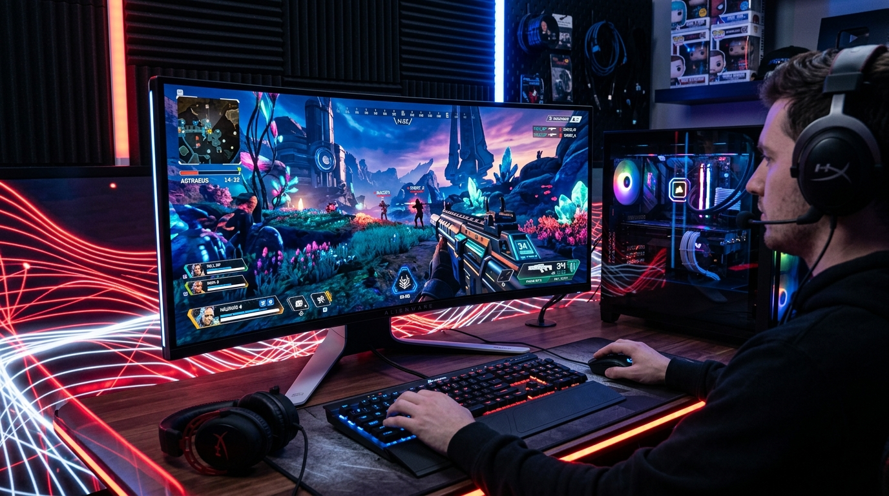

Battle Royale türünün en hızlı ve mekanik odaklı oyunu Apex Legends'ta, ekranın sağ üst köşesinde beliren o meşhur Kırmızı Hata İkonları (Packet Loss, UCMD Delay, Prediction Error) her oyuncunun korkulu rüyasıdır. EA sunucularının (Multiplay) meşhur 20Hz Tickrate altyapısı zaten yeterince ağırken, bir de sizin bağlantınızda ufak bir sorun varsa oyun tamamen oynanamaz hale gelir.
Bu kırmızı ikonlardan kurtulmak ve gecikmeyi minimuma indirmek için şu adımları izleyin.
1. Sunucu (Data Center) Seçimini Manuel Yapın
Oyun sizi çoğu zaman pingi en düşük görünen sunucuya atar ancak o sunucuda "Packet Loss" (Paket Kaybı) olabilir. Ana ekranda (Lobiye girmeden önce) "Data Center" menüsünü açın.
2. Arka Plandaki EA App / Origin Hizmetlerini Sınırlandırın
Eğer oyunu EA App üzerinden oynuyorsanız, uygulamanın arka plan veri toplama servisleri (In-Game Overlay) anlık ping fırlamalarına sebep olabilir. Uygulama ayarlarına girerek "Application Updates", "In-Game Overlay" ve veri paylaşım (Telemetry) özelliklerinin tümünü devre dışı bırakın.
3. Modem MTU (Maximum Transmission Unit) Ayarı
Apex Legends sunucuları veri paketlerinin parçalanmasından (Fragmentation) nefret eder. Eğer modeminizin MTU değeri çok yüksekse ve paketler parçalanıyorsa, oyunda "Prediction Error" (iki tane kırmızı paralel çizgi) hatası alırsınız.
- Modem arayüzünüze girin (WAN Ayarları bölümüne).
- MTU değerini bulun (Genelde otomatik 1492 veya 1500'dür).
- Bu değeri 1472 veya 1450 yaparak deneme yanılma ile kaydedin. Çoğu oyuncu MTU düşürerek Apex'teki takılmalardan tamamen kurtulmuştur.
4. Wi-Fi'dan Kaçının ve QoS Kullanın
Apex Legends sunucu ile sürekli olarak istemci pozisyonunu teyit eder. Odanızın kapısı kapandığında Wi-Fi sinyalinde yaşanan milisaniyelik bir dalgalanma (Jitter), oyunda "lastik gibi geri çekilme" (Rubberbanding) yaşamanıza neden olur. Kablolu bağlantıya geçin ve evdeki diğer kullanıcıların video izlemesi durumuna karşı Bufferbloat (QoS) ayarlarınızı kesinlikle yapın.